This appendix introduces the logarithmic function used to improve the magnitude resolution of frequency-domain plots when we evaluate signal spectra, digital filter magnitude responses, and window function magnitude responses. When we use a logarithmic function to plot signal levels in the frequency domain, the vertical axis unit of measure is decibels.
In discussing decibels, it’s interesting to see how this unit of measure evolved. When comparing continuous (analog) signal levels, early specialists in electronic communications found it useful to define a measure of the difference in powers of two signals. If that difference was treated as the logarithm of a ratio of powers, it could be used as a simple additive measure to determine the overall gain or loss of cascaded electronic circuits. The positive logarithms associated with system components having gain could be added to the negative logarithms of those components having loss quickly to determine the overall gain or loss of the system. With this in mind, the difference between two signal power levels (P1 and P2), measured in bels, was defined as the base 10 logarithm of the ratio of those powers, or
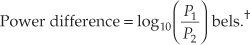
† The dimensionless unit of measure bel was named in honor of Alexander Graham Bell.
The use of Eq. (E-1) led to another evolutionary step because the unit of bel was soon found to be inconveniently small. For example, it was discovered that the human ear could detect audio power level differences of one-tenth of a bel. Measured power differences smaller than one bel were so common that it led to the use of the decibel (bel/10), effectively making the unit of bel obsolete. The decibel (dB), then, is a unit of measure of the relative power difference of two signals defined as
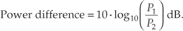
The logarithmic function 10·log10(P1/P2), plotted in Figure E-1, doesn’t seem too beneficial at first glance, but its application turns out to be very useful. Notice the large change in the function’s value when the power ratio (P1/P2) is small, and the gradual change when the ratio is large. The effect of this nonlinearity is to provide greater resolution when the ratio P1/P2 is small, giving us a good way to recognize very small differences in the power levels of signal spectra, digital filter responses, and window function frequency responses.
Figure E-1 Logarithmic decibel function of Eq. (E-2).
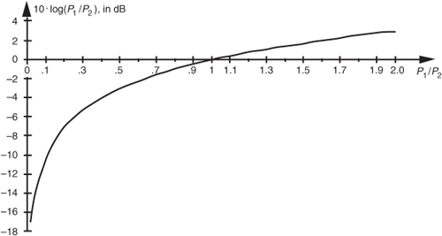
Let’s demonstrate the utility of the logarithmic function’s variable resolution. First, remember that the power of any frequency-domain sequence representing signal magnitude |X(m)| is proportional to |X(m)| squared. For convenience, the proportionality constant is assumed to be one, so we say the power of |X(m)| is
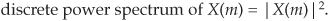
Although Eq. (E-3) may not actually represent power (in watts) in the classical sense, it’s the squaring operation that’s important here, because it’s analogous to the traditional magnitude squaring operation used to determine the power of continuous signals. (Of course, if X(m) is complex, we can calculate the power spectrum sequence using |X(m)|2 = Xreal(m)2 + Ximag(m)2.) Taking ten times the log of Eq. (E-3) allows us to express a power spectrum sequence XdB(m) in dB as
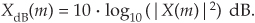
Because log(x2) = log(x) + log(x) = 2log(x), we can eliminate the squaring operation in Eq. (E-4) by doubling the factor of ten and represent the power spectrum sequence by the expression
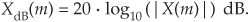
Without the need for the squaring operation, Eq. (E-5) is a more convenient way than Eq. (E-4) to calculate the XdB(m) power spectrum sequence from the X(m) sequence.
Equations (E-4) and (E-5), then, are the expressions used to convert a linear magnitude axis to a logarithmic magnitude-squared, or power, axis measured in dB. What we most often see in the literature are normalized log magnitude spectral plots where each value of |X(m)|2 is divided by the first |X(0)|2 power value (for m = 0), as
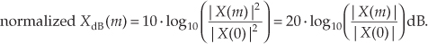
The division by the |X(0)|2 or |X(0)| value always forces the first value in the normalized log magnitude sequence XdB(m) equal to 0 dB.† This makes it easy for us to compare multiple log magnitude spectral plots. To illustrate, let’s look at the frequency-domain representations of the Hanning and triangular window functions. The magnitudes of those frequency-domain functions are plotted on a linear scale in Figure E-2(a) where we’ve arbitrarily assigned their peak values to be 2. Comparing the two linear scale magnitude sequences, WHanning(m) and Wtriangular(m), we can see some minor differences between their magnitude values. If we’re interested in the power associated with the two window functions, we square the two magnitude functions and plot them on a linear scale as in Figure E-2(b). The difference between the two window functions’ power sequences is impossible to see above the frequency of, say, m = 8 in Figure E-2(b). Here’s where the dB scale helps us out. If we plot the normalized log magnitude versions of the two magnitude-squared sequences on a logarithmic dB scale using Eq. (E-6), the difference between the two functions will become obvious.
† That’s because log10(|X(0)|/|X(0)|) = log10(1) = 0.
Figure E-2 Hanning (white squares) and triangular (black squares) window functions in the frequency domain: (a) magnitude responses using a linear scale; (b) magnitude-squared responses using a linear scale; (c) log magnitude responses using a normalized dB scale.
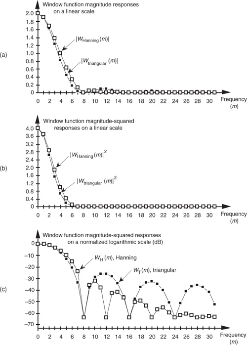
Normalization, in the case of the Hanning window, amounts to calculating the log magnitude sequence normalized over |WHanning(0)| as
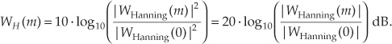
The normalized log magnitude sequences are plotted in Figure E-2(c). We can now clearly see the difference in the magnitude-squared window functions in Figure E-2(c) as compared to the linear plots in Figure E-2(b). Notice how normalization forced the peak values for both log magnitude functions in Figure E-2(c) to be zero dB. (The dots in Figure E-2 are connected by lines to emphasize the sidelobe features of the two log magnitude sequences.)
Although we’ve shown the utility of dB plots using window function frequency responses as examples, the dB scale is equally useful when we’re plotting signal-power spectra or digital filter frequency responses. We can further demonstrate the dB scale using a simple digital filter example. Let’s say we’re designing an 11-tap highpass FIR filter whose coefficients are shown in Figure E-3(a). If the center coefficient h(5) is –0.48, the filter’s frequency magnitude response |H–0.48(m)| can be plotted as the white dots on the linear scale in Figure E-3(b). Should we change h(5) from –0.48 to –0.5, the new frequency magnitude response |H–0.5(m)| would be the black dots in Figure E-3(b). It’s difficult to see much of a difference between |H–0.48(m)| and |H–0.5(m)| on a linear scale. If we used Eq. (E-6) to calculate two normalized log magnitude sequences, they could be plotted as shown in Figure E-3(c), where the filter sidelobe effects of changing h(5) from –0.48 to –0.5 are now easy to see.
Figure E-3 FIR filter magnitude responses: (a) FIR filter time-domain coefficients; (b) magnitude responses using a linear scale; (c) log magnitude responses using the dB scale.
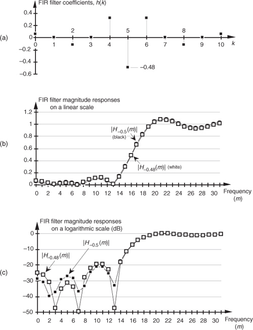
If the reader uses dB scales on a regular basis, there are a few constants worth committing to memory. A power difference of 3 dB corresponds to a power factor of two; that is, if the magnitude-squared ratio of two different frequency components is 2, then from Eq. (E-2),
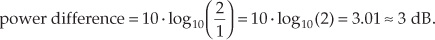
Likewise, if the magnitude-squared ratio of two different frequency components is 1/2, then the relative power difference is –3 dB because
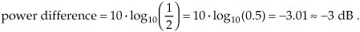
Table E-1 lists several magnitude and power ratios versus dB values that are worth remembering. Keep in mind that decibels indicate only relative power relationships. For example, if we’re told that signal A is 6 dB above signal B, we know that the power of signal A is four times that of signal B, and that the magnitude of signal A is twice the magnitude of signal B. We may not know the absolute power of signals A and B in watts, but we do know that the power ratio is PA/PB = 4.
Table E-1 Some Useful Logarithmic Relationships
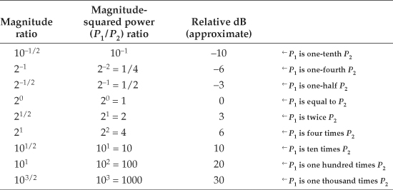
Let’s discuss another use of decibels that the reader may encounter in the literature. It’s convenient for practitioners in the electronic communications field to measure continuous signal-power levels referenced to a specific absolute power level. In this way, they can speak of absolute power levels in watts while taking advantage of the convenience of decibels. The most common absolute power reference level used is the milliwatt. For example, if P2 in Eq. (E-2) is a reference power level of one milliwatt, then
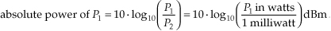
The dBm unit of measure in Eq. (E-10) is read as “dB relative to a milliwatt.” Thus, if a continuous signal is specified as having a power of 3 dBm, we know that the signal’s absolute power level is 2 times one milliwatt, or 2 milliwatts. Likewise, a –10 dBm signal has an absolute power of 0.1 milliwatts.†
† Other absolute reference power levels can be used. People involved with high-power transmitters sometimes use a single watt as their reference power level. Their unit of power using decibels is the dBW, read as “dB relative to a watt.” In this case, for example, 3 dBW is equal to a 2-watt power level.
The reader should take care not to inadvertently use dB and dBm interchangeably. They mean very different things. Again, dB is a relative power level relationship, and dBm is an absolute power level in milliwatts.